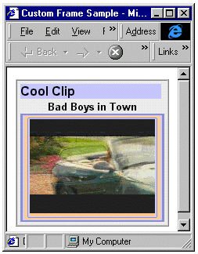
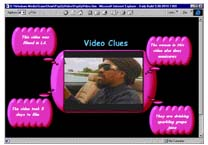

|
| ||
|
| ||
Nadja Vol Ochs
Design Lead
Microsoft Corporation
Posted January 18, 1999
The following article was originally published in the Site Builder Network Magazine.
A previous Site Builder Network Magazine column discussed how to embed the Windows Media Player and provided source code to do it. Now let's look at:
First, it is important to understand that you can embed the Windows Media Player in the following browsers on the Windows platform: Internet Explorer 3.0 or later, and Netscape Navigator 4.04. For the Macintosh and UNIX platforms, the Windows Media Player will work only in stand-alone mode.
You embed the player differently for each browser. Internet Explorer requires an ActiveX® control, while Netscape requires a plug-in. See my previous column for the required <OBJECT> tag script. If you are going to add custom buttons for the embedded player, you also need to use browser-detection script that initiates different button scripts for each browser type. This is because the browser object model is different for each of the browsers. See the section below, Create and Script Custom Buttons, to learn more about this.
The easiest way to embed the player with a unique look and feel is to frame the player with graphics. Place the player in the center cell of a three-column table; in the surrounding table cells, position parts of the frame and the custom buttons.
| Top Frame Graphic | ||
| Left Frame Graphic |
Windows Media Player Object/Embed |
Right Frame Graphic |
| Bottom Frame Graphic | ||
|
| ||

For the effects shown above, use a table with a border and background color set. View the demo. (Note You need the Windows Media Player to view the samples featured in this article.)
to view the samples featured in this article.)
Things to remember when designing a custom frame using tables:
Another way you might create a frame is by using a single graphic inside a <DIV> that is positioned behind the player window in a lower z-index. This works only for Internet Explorer 4.0 and later. For example, I did this type of custom frame for a Windows Media Player pop-up video demo.
<DIV ID=frame STYLE="position:absolute; top:128; left:176; z-index:1; visibility:visible;"> <IMG src="frame.gif"> </DIV>

Before creating custom buttons for your embedded player, you need to decide what functionality you want to expose to the user. For example, are you going to allow users to play, stop, or pause the media? Let's work with a simple sample that allows users to play and stop the video.
Use the <OBJECT> source from my previous article to embed the player on the page. Then turn off the player controls by setting the following parameters in the <OBJECT> to zero:
<PARAM NAME="ShowControls" VALUE="0"> <PARAM NAME="ShowDisplay" VALUE="0"> <PARAM NAME="ShowStatusBar" VALUE="0">
You also need to set the parameters in the plug-in source:
ShowControls="0"
ShowDisplay="0"
ShowStatusBar="0"
Use Adobe Photoshop or your favorite Web graphics tool to create the buttons. One easy way to create buttons is to do a screen grab of the player while it is open with the controls showing. Then in Photoshop, crop the buttons apart and use them as templates. Create new buttons from the original player buttons by changing colors, shapes, or sizes. If you are going to add mouseover events to your buttons, you will need to create two or three different versions of each button: one for the "on", one for the "off", and one for the "mouseover" highlight state for each button. Save the button graphics as individual browser-safe GIF files.
<TR><TD colspan=3><CENTER> <A href="javascript:play()"> <IMG ALT="Play" BORDER=0 src="images/play_purple.gif" ID="playbutton"></A> <A href="javascript:stop()"> <IMG ALT="Stop" BORDER=0 src="images/stop_grey.gif" ID="stopbutton"></A> </CENTER></TD></TR>
<SCRIPT LANGUAGE="JavaScript">
var bWin32IE;
if ((navigator.userAgent.indexOf("IE")
!= "-1") && (navigator.userAgent.length > 1)) {
bWin32IE = true;
} else {
bWin32IE = false;
}
</SCRIPT>
Notice how the script is different for Internet Explorer than for Netscape Navigator, because of the difference in the object model.
function start(){
if (bWin32IE == true) {
WMPlay.CurrentPosition = 0;
WMPlay.play();
} else {
document.WMPlay.SetCurrentPosition(0);
document.WMPlay.Play();
}
}
function stop(){
if (bWin32IE == true) {
WMPlay.stop();
} else {
document.WMPlay.Stop();
document.WMPlay.SetCurrentPosition(0);
}
}
Add more JavaScript to increase the interactivity and visual functionality of your buttons for mouseover highlights, on and off states. Adding this functionality gets a bit more complicated. In order for all the buttons to change for mouseover, play, and stop states, you need to write different script for Internet Explorer and Navigator.
For a well-commented code example, I recommend working with the custom-button sample written by Mike Culver, a technical evangelist on my team at Microsoft. You can find Mike's sample in the Windows Media Technology Showcase . Click on code samples, and then select the first sample, "Scripting Custom Player Controls."
. Click on code samples, and then select the first sample, "Scripting Custom Player Controls."
Additional samples written by John Green illustrate various ways to author cross-browser embedded Windows Media players, and are also available in the showcase.
A great place to learn more about embedding ASF files is the Windows Media Services Jumpstart CD, which can be ordered from the Windows NT Server Web site
Other resources include:
Did you find this material useful? Gripes? Compliments? Suggestions for other articles? Write us!
© 1999 Microsoft Corporation. All rights reserved. Terms of use.